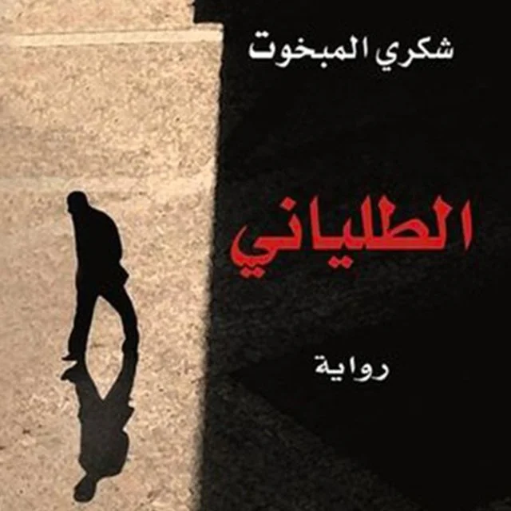

Cover of Shukri al-Mabkhout's Al-Talyani (The Italian, 2015)
Beauty might be skin deep, but its effect is apparently powerful enough to construct a whole novel on the good looks of its protagonist. Shukri al-Mabkhout's Al-Talyani (The Italian 2015), the winner of this year's International Prize for Arabic Fiction, is a tale of the life and times of a narcissist nicknamed "the Italian" for his looks, which are the reason for his downfall and the elaborate sexual encounters that take up about 40 percent of the novel.
Set against the backdrop of Tunisia on the eve of the 1987 coup, the story meanders restlessly through the ensuing two decades under the rule of the late dictator Zine al-Abidine Ben Ali. It leaves the reader right at the point where we expect a mention of the "Jasmine revolution." Sadly there is none.
Mabkhout, who currently heads Tunisia's university of Manouba, starts his first novel with interesting tension between the old social order of the ousted Habib Bourguiba (the first president of Tunisia and the architect of its modernization), and the rising classes of Ben Ali's neoliberal state, who are described as petty thieves and drug dealers. Yet, for all intents and purpose, this tension quickly dissipates and a long-winded digression into the history of the student movement in Tunisia circa 1970 takes up as much as 40 pages.
When he is not saving the day for the student movement through his foresight and quick wit, Abdel Nasser is courting the affections of many women, principally the bewitching Zeina, his intellectual match and a rough Southern girl (Tunisia seems to suffer a very similar bias toward its Southern population as Egypt does). The writer spares nothing in exalting the virtues of Zeina – she is dedicated, fiercely intelligent and hard-working (almost obsessively so) – and for these virtues he punishes her ruthlessly. Indeed, he falls for the oldest cliché of the intelligent woman – the shrew. Just as he glorifies her, he ascribes her innumerable vices (she is selfish, uncaring, almost cruel, ungrateful, hypocritical, and so on) and a tragic fate. It's hard to believe in this day and age that intelligent female characters are still doomed just because they are perceived as intelligent or ambitious. Or, as in the case of Zeina, both.
Zeina is not the only character Makhbout punishes. Nearly all the female characters face tragic fates. Abdel Nasser's mother is a tyrannical, hypocritical, nonsensical matriarch. His neighbor, praised for her beauty, her ravishing scents (like thyme and clover) and her generosity with her affections and body, descends into notoriety for soliciting sexual favours from young boys to fulfil her insatiable needs. Misogyny is palpable throughout the novel, and all the women, who at first glance look powerful and beautiful, are soon discarded to the worst fate possible without reasonable explanation.
Abdel Nasser is not exactly an angel. He has many moments of wanton cruelty and selfishness, and many others where his judgement is compromised by dark motives or impulses. We never quite understand why gets away with it and the women don't.
Mabkhout basks in his glowing prose of the male hero's sexual encounters. His writing is as agile and inventive as his protagonist is. There is little doubt that he is master of Arabic prose, and his grip over its complex lexicon is perhaps the novel's greatest achievement. No other author in recent memory has written intimate scenes with such subtlety and choreographic grace. If there's a great writer of contemporary Arabic erotic literature, Mabkhout is it. It is terribly unfortunate that such writing is marred by the pervasive misogyny that colors his prose and analogies. From the usual stereotypes of women as "conquests," to the protagonist's love interest described as a "mare" and to marriage being summed up by one of the marginal characters as "why buy the cow, when the milk is available on the market?"
It is very hard to comprehend why Mabkhout uses the word luti (sodomite) and shaz (pervert) for "homosexual." Tunisia is perhaps the only country in the Middle East and the Arab world with a recognizable LGBT movement and one of the very few that have called for the decriminalization of homosexuality. It's a surprise therefore that Mabkhout is old-fashioned and conservative enough to not only equate paedophilia with homosexuality but to use very derogatory terms to describe it. And it's sad for the nth time to read an Arabic novel with only one LGBT character, and one who is described as a pervert, paedophile and menace to society.
When it is not maligning women and LGBT characters, The Italian is insightful on the contemporary history of Tunisia and the inner workings of its post-independent state and its one-party system. It gives a historical overview of a profoundly tumultuous time for the region – the three decades preceding the "Arab Spring." In passing moments of analytical brilliance, Mabkhout paints an absorbing portrait of how the IMF and World Bank structural adjustment programs of the 1980s and the doctrine of economic liberalization mixed with an extremely authoritarian and corrupt state did little to relieve any hardships. In fact, they did exactly the opposite. The neoliberal state dismantled whatever social gains the post-independent state had managed to deliver and impoverished the majority of its population while giving rise to a parasitic class of corrupt officials and businessmen.
The frustrations of Makhbout's characters (when they are not frolicking around in sexual bliss) at the bleak authoritarianism of Ben Ali and its ubiquitous corruption resonates with any reader from the Arab world who grew up in the shadow of a similar dictator and government. It's a shame that such insights are overshadowed by narcissism, sexism and homophobia.